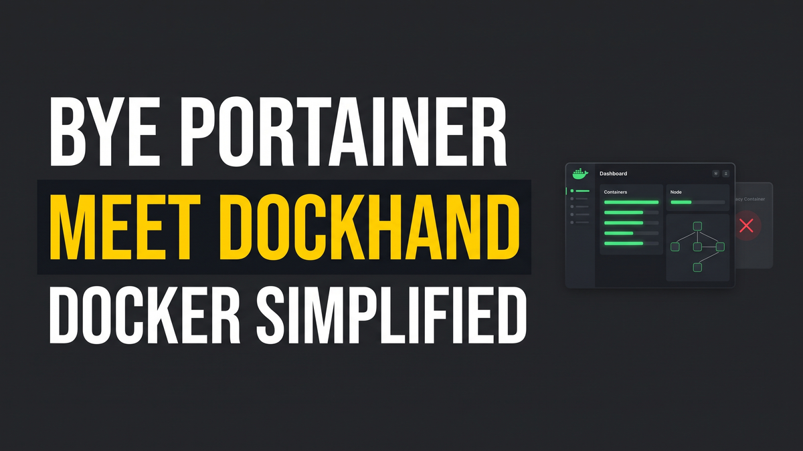
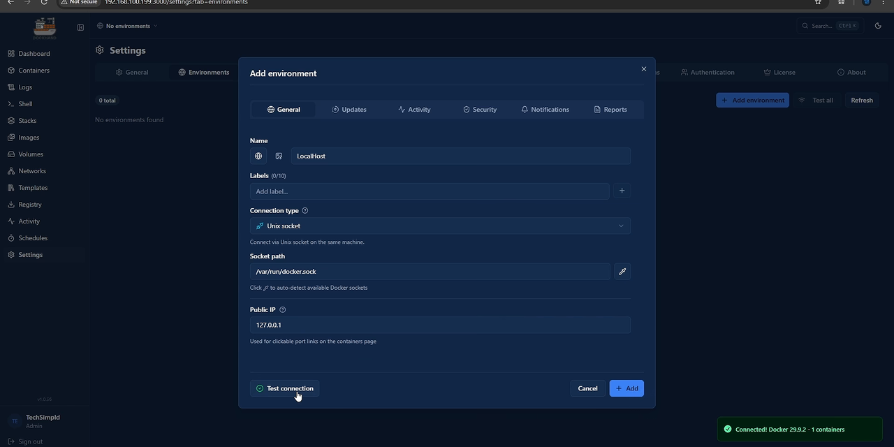
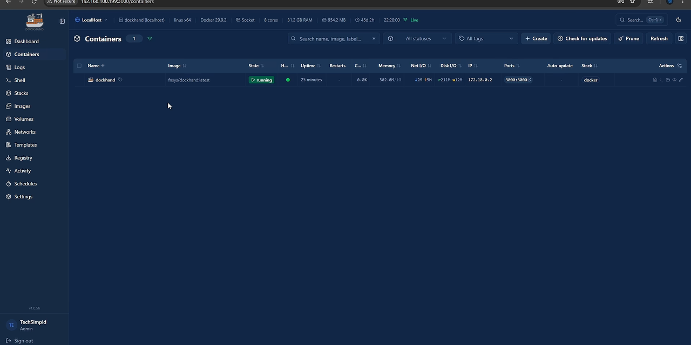
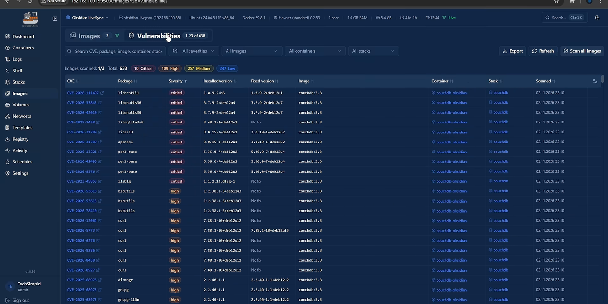

Goodbye Portainer: Deploy Dockhand for Modern Multi-Server Docker Management

For nearly a decade, Portainer was the default web UI for anyone building a home lab or managing containerized workloads on bare-metal servers. It simplified container creation, network bridging, volume management, and image pulls for millions of self-hosters. However, recent commercial pivots have changed that reality.
Portainer officially froze its open-source Community Edition (CE) at version 2.45. Moving forward, Portainer 3.0 transitioned to a closed-source Business Edition architecture. To run version 3.0, users are required to sign up for an enterprise account, paste a commercial license key, and accept strict licensing limitations that restrict free installations to three nodes before billing per environment.
For homelabbers running three Proxmox nodes, a secondary storage host, and a handful of remote virtual machines, that 3-node wall is an immediate dead end. Fortunately, an open-source tool named Dockhand has arrived to solve this problem cleanly. Dockhand provides unlimited free node management, runs with zero telemetry, includes a built-in container file browser and editor, and features native Trivy and Grype vulnerability scanning.
1. Licensing Walls: Portainer 3.0 mandates commercial registration and caps free management at 3 environments.
2. Telemetry & Account Binding: Version 3.0 requires persistent phone-home validation for license checks.
3. Heavy Overhead: Dockhand starts instantly, maintains a streamlined footprint, and does not require complex RBAC databases just to inspect a local stack.
What Is Dockhand?
Dockhand is an open-source, web-based management layer for Docker written specifically for speed, simplicity, and self-hosted privacy. It connects directly to the local Docker socket on your primary host and communicates with remote servers via a dedicated daemon called Hawser.
Unlike monolithic enterprise dashboards, Dockhand focuses on the exact day-to-day operations homelabbers and DevOps engineers care about:
- Zero Telemetry: No tracking scripts, no cloud logins, and no external registration gates.
- Unlimited Free Environments: Connect two, ten, or fifty Docker hosts across your network without encountering license upgrade prompts.
- Integrated File Explorer: Browse, download, and edit configuration files directly inside container filesystems without launching an interactive terminal shell.
- Real-Time Web Terminal & Logs: Instant shell access and streaming stdout/stderr log output with ANSI color support.
- Docker Compose Stack Inspection: View running stacks, inspect underlying Compose definitions, and validate configuration syntax.
- Built-In Security Auditing: Run automated Trivy or Grype CVE vulnerability checks on your container images.
- Gotify & Webhook Alerts: Route container health notifications and backup statuses to your self-hosted notification relays.
Step 1: Deploying Dockhand with Docker Compose
Dockhand runs as a single container image distributed via Docker Hub as fnsys/dockhand:latest. To deploy it on your primary server, create a dedicated directory and write a docker-compose.yml file.
mkdir -p /opt/dockhand
cd /opt/dockhand
nano docker-compose.ymlPaste the following Compose configuration. This sets up persistent storage in a local Docker volume, maps port 3000 to the host, and binds the host Docker socket into the container so Dockhand can control local workloads:
services:
dockhand:
image: fnsys/dockhand:latest
container_name: dockhand
restart: unless-stopped
ports:
- "3000:3000"
volumes:
- /var/run/docker.sock:/var/run/docker.sock
- dockhand_data:/app/data
volumes:
dockhand_data:
driver: localSave the file and start the container in detached mode:
docker compose up -d
Once started, open your web browser and navigate to http://<your-server-ip>:3000.

Critical First Step: Initial User Creation & Authentication
When you first access Dockhand, authentication is not locked down by default to allow smooth initial provisioning. Do not skip creating your administrator account.
Click the Settings gear icon in the left-hand navigation pane, navigate to the Users tab, and click Add User. Create your username and assign a strong passphrase.
In the general settings tab, there is a global toggle to enforce authentication. Never turn this toggle on before you have explicitly created and tested an administrator account in the Users menu. If you enable the toggle first with an empty user database, you will lock yourself out of the web interface and will need to wipe the dockhand_data volume to recover.
Connecting the Local Host Environment
After securing user credentials, navigate to Settings → Environments. Click Add Environment, label the host as Localhost, and select the local Unix socket radio option (/var/run/docker.sock). Save the environment. You can now return to the main dashboard to view all containers currently executing on your primary machine.
Step 2: Connecting Remote Nodes with the Hawser Agent
Managing a single host is convenient, but the real power of Dockhand lies in multi-server administration without license restrictions. Rather than exposing insecure, unauthenticated TCP Docker sockets across your network, Dockhand relies on Hawser.
Hawser is a lightweight, compiled Go agent designed to run as a systemd background service on remote Linux hosts. It listens on port 2376 and enforces pre-shared secret token authentication.

Installing Hawser on Remote Linux Hosts
SSH into your remote server (for example, a secondary Proxmox VM or a dedicated storage host). The Dockhand project provides an automated installation script that registers the systemd daemon:
curl -fsSL https://raw.githubusercontent.com/Finsys/hawser/main/scripts/install.sh | sudo bash
The installer sets up the Hawser binary at /usr/local/bin/hawser and writes a default configuration file at /etc/hawser/config. Open this configuration file in your editor:
sudo nano /etc/hawser/config
Ensure the port is set to 2376 and define a secure secret token:
port: 2376
token: "YOUR_SUPER_SECRET_AUTHENTICATION_KEY_HERE"
docker_socket: "/var/run/docker.sock"Restart and enable the Hawser systemd service so it boots automatically:
sudo systemctl restart hawser
sudo systemctl enable hawser
sudo systemctl status hawserRegistering the Remote Host in Dockhand
Return to the Dockhand web interface on your primary server:
- Click Settings → Environments → Add Environment.
- Enter an identifiable name (for instance,
Obsidian-CouchDB-Host). - Select the Hawser Agent connection type.
- Enter the remote server IP address (e.g.,
192.168.1.150:2376). - Paste the exact shared secret token you defined in
/etc/hawser/config. - Click Save Environment.
Dockhand will perform a handshake with the remote Hawser daemon. Within two seconds, the new host will appear in the environment dropdown menu on your dashboard. You can switch between your primary host and remote nodes instantly with a single mouse click.
Step 3: In-Container File Editing and Terminal Access
One of Dockhand's standout features compared to Portainer and Dockge is its live filesystem explorer. In traditional managers, if you need to modify an Nginx configuration file, a JSON database file, or an application secret inside a container volume, you have to execute an interactive shell or SSH into the host and locate the volume mount path.
Inside Dockhand, click any container in your list and select the Files tab. You are presented with a file tree representing the live container filesystem. You can navigate directories, upload assets, download logs, and click any text file to open an integrated code editor. After making adjustments, clicking Save commits the file changes directly into the container storage layer.
If you need raw command-line access, click the Terminal tab. Dockhand attaches a responsive WebSocket shell using /bin/sh or /bin/bash, complete with tab completion and standard terminal shortcuts.
Step 4: Vulnerability Scanning & Gotify Notifications
Keeping container infrastructure patched against zero-day exploits requires ongoing awareness. Dockhand integrates security auditing directly into container views using standard scanners like Trivy and Grype.

Running an Image CVE Scan
From the container inspection view, switch to the Security tab. Click Run Vulnerability Scan. Dockhand dispatches a scan request against the image layers, comparing installed libraries against updated vulnerability databases.
The output breaks down findings by severity (Critical, High, Medium, Low), displaying the affected Debian or Alpine package name, the patched version required, and direct hyperlinks to the National Vulnerability Database (NVD) CVE entry.
Setting Up Gotify Webhook Notifications
To receive real-time push alerts on your phone or desktop when containers unexpectedly crash or fail health checks, you can pair Dockhand with a self-hosted Gotify notification server:
- Open Settings → Notifications.
- Select Gotify from the provider list.
- Enter your Gotify instance URL (e.g.,
https://gotify.yourdomain.com). - Enter your Gotify application token.
- Select event triggers: container status change, failed health checks, and scheduled scan alerts.
Click Send Test Notification to verify network connectivity. For a detailed guide on standing up your own lightweight push relay, check our tutorial on setting up self-hosted push notifications with Gotify.
Dockhand vs. Portainer vs. Dockge: Technical Comparison
Choosing the right Docker manager depends on the scope of your home lab and whether you manage single or multiple hosts. Here is how Dockhand stacks up against Portainer CE and Dockge:
| Feature | Dockhand | Portainer CE / 3.0 | Dockge |
|---|---|---|---|
| License Model | 100% Free & Open Source | CE Frozen at 2.45; 3.0 Commercial (3 Node Limit) | 100% Free & Open Source |
| Telemetry | Zero (Completely Private) | Mandatory License Calls in 3.0 | Zero |
| Multi-Host Management | Native via Hawser Agent (Unlimited) | Native via Portainer Agent (Capped in 3.0) | Host-to-host agent links |
| In-Container File Editor | Yes (Integrated web file tree) | No (Terminal exec only) | No (Compose YAML only) |
| CVE Vulnerability Scanning | Yes (Trivy & Grype built-in) | Requires Business Edition | No |
| Compose Management | Stack viewer & validator | Custom Stacks & Templates | Native Compose-centric UI |
| Resource Footprint | Lightweight (~60MB RAM) | Medium (~120MB+ RAM) | Very Low (~35MB RAM) |
If your primary focus is purely creating Compose files in markdown with reactive live updating on a single node, you might also consider exploring Docker vs Podman architectures. However, if you need a true Portainer replacement that can control multiple servers, audit container security, browse files, and provide centralized management without enterprise licensing fees, Dockhand is the clear winner.
Common Pitfalls & Troubleshooting
- Docker Socket Permission Denied (Error 13): If Dockhand fails to display containers on the local host, verify that the user running the Docker daemon has write permissions on the socket with
sudo usermod -aG docker $USER. Confirm that the socket is mounted into the container as/var/run/docker.sock:/var/run/docker.sockin your Compose YAML. - Hawser Agent Connection Timeout on Port 2376: If Dockhand cannot connect to a remote Hawser node, check your remote firewall rules (UFW or firewalld). Port 2376 must be open to your primary Dockhand host:
sudo ufw allow from 192.168.1.100 to any port 2376 proto tcp. - Token Mismatch Errors: If Dockhand returns an authentication failure when adding a remote host, verify there are no trailing whitespace characters or unescaped quotes in
/etc/hawser/configon the remote server. Restart the service after making edits.
Frequently Asked Questions
Can I run Dockhand alongside Portainer while migrating?
Yes. Because Docker containers and the Docker engine are decoupled from web management dashboards, you can run both Dockhand and Portainer simultaneously on the same host without conflict, provided they are bound to different host ports (e.g., Dockhand on port 3000 and Portainer on port 9443).
Does Dockhand support Docker Swarm clusters?
Dockhand is currently optimized for standalone Docker engines and multi-node standalone hosts connected via Hawser. If you require advanced Swarm service scheduling and overlay network configuration, tools like Arcane or legacy Portainer CE 2.45 remain options for Swarm-specific deployments.
How are Dockhand container backups handled?
Dockhand stores all its internal database state, environment records, and user authentication tables inside the mapped /app/data volume. To back up your Dockhand instance, simply create a snapshot or tar archive of the dockhand_data volume while the container is paused or stopped.
Key Takeaways & Next Steps
Deploying Dockhand with the Hawser agent restores unrestricted, multi-server Docker management to your home lab. With an in-container file tree, built-in vulnerability auditing, zero telemetry, and no commercial licensing caps, you can build out your container infrastructure with complete peace of mind.
Explore our companion guides and web utilities to build out your homelab:
- Compare container engines in our Docker vs. Podman In-Depth Guide.
- Monitor host telemetry and container metrics with Uptime Kuma & Monitoring Guides.
- Keep containers safely updated without breaking changes using Arcane Docker Auto-Update Manager.
- Generate clean compose stacks with our Docker Compose & .env Generator.